The climb
The ladder.
Seventeen rungs, each its own page — the idea, the key formula, the theory, the real terminal output, and the full source. Every page also links to an executed Jupyter notebook you can run yourself.

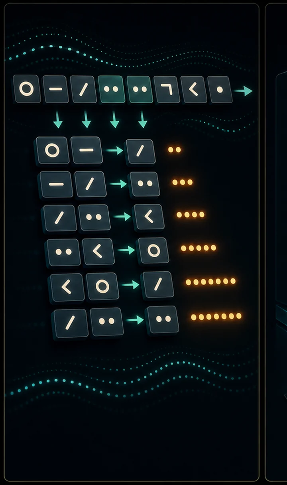
The simplest language model
predict the next character by counting
→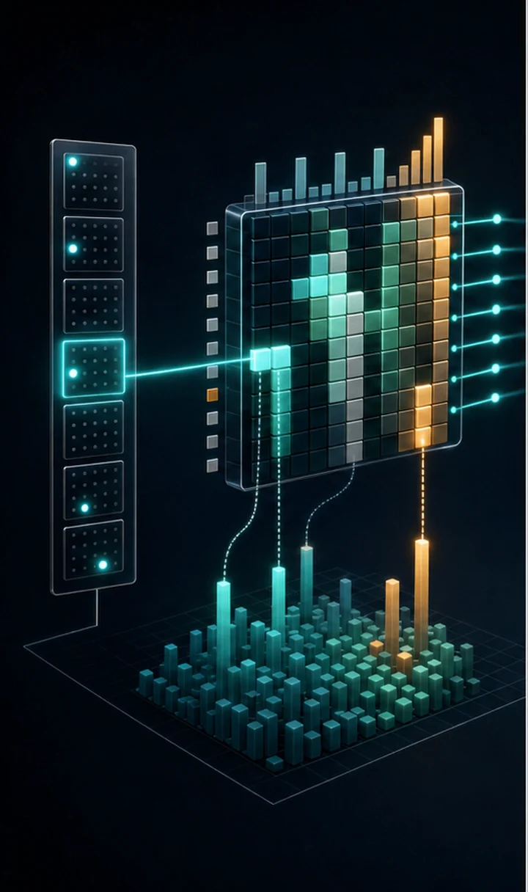
The same model, learned
softmax + cross-entropy via gradient descent
→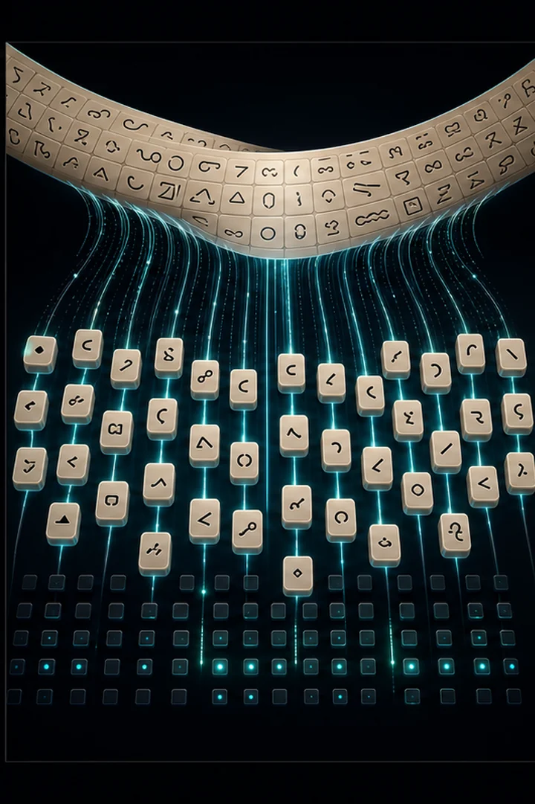
Turning text into numbers
char-level and Byte-Pair Encoding (BPE)
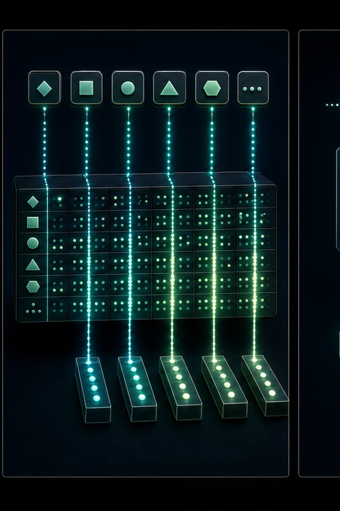
Embeddings & context
the Bengio MLP — names start looking real
→
Automatic differentiation
a mini-micrograd — how backprop automates itself
→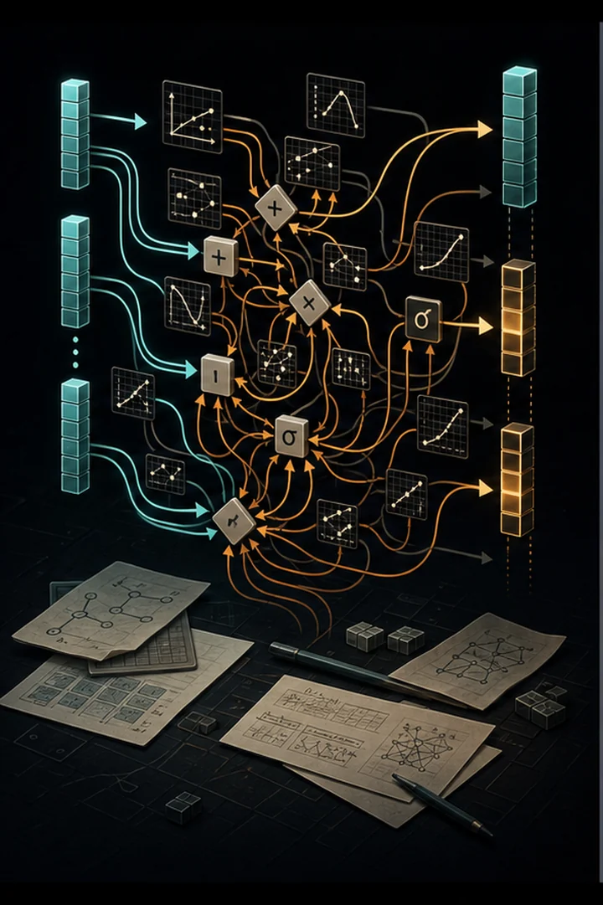
Switching to PyTorch
all the hand-coded backprop collapses to one line
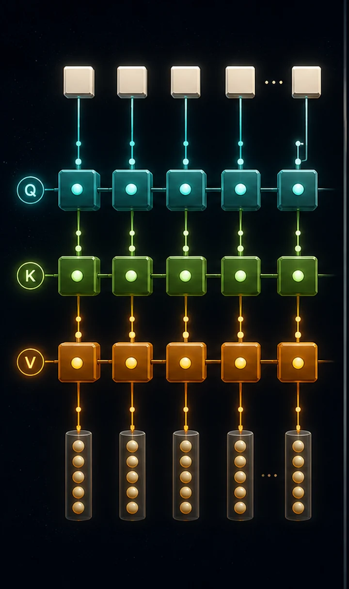
Self-attention
the mechanism that makes transformers work
→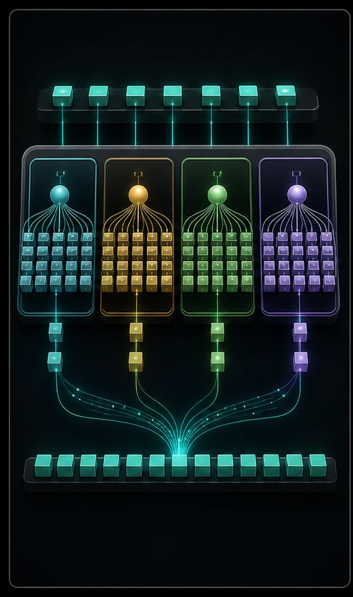
The transformer block
multi-head attention + MLP + residuals + norm
→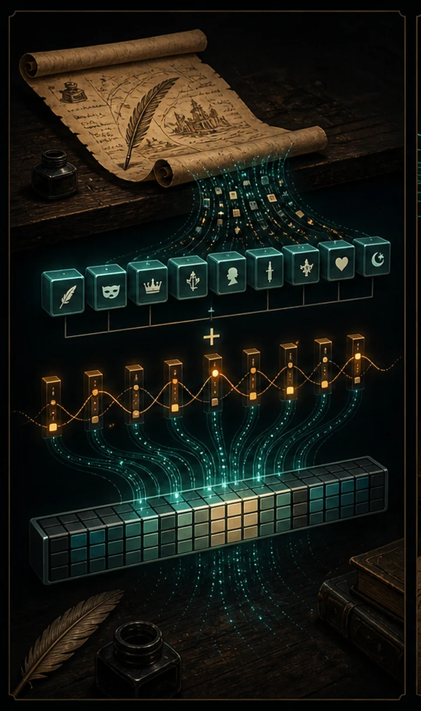
A real GPT
trained on Shakespeare — it generates text

Sampling strategies
temperature, top-k, top-p — one model, many writers
→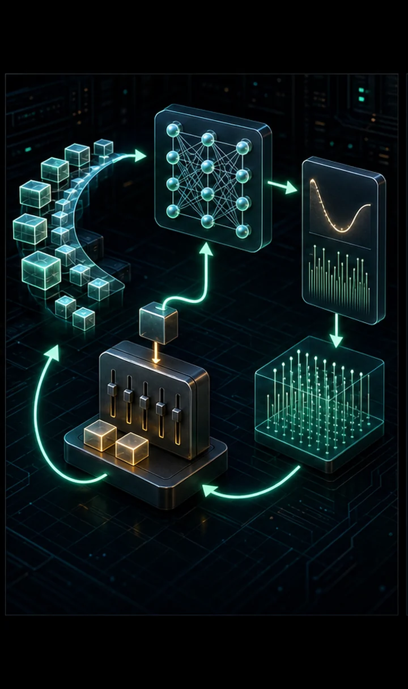
Production training
resumable checkpoints + LR warmup/decay
→
Instruction tuning
base model → assistant (the ChatGPT leap)
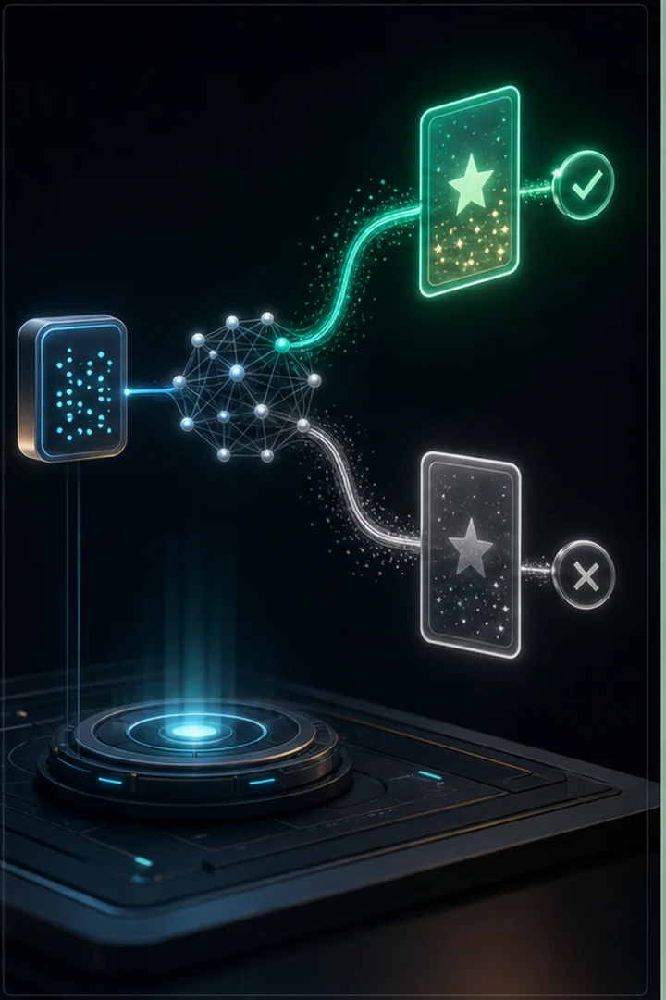
Preference tuning with DPO
the modern alternative to RLHF
→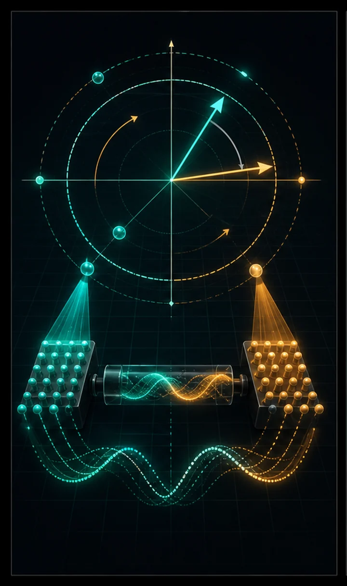
The 2026 architecture
RoPE · RMSNorm · SwiGLU · GQA